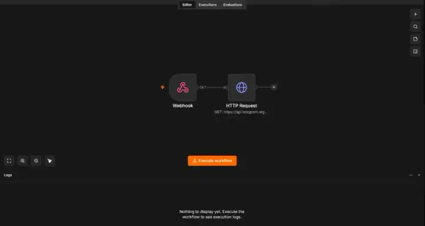

Trigger
Tasker watches a 400m workplace geofence and sends an entry or exit webhook when the location event fires.
A self-hosted automation pipeline connecting a physical-world phone trigger to n8n, Telegram, Docker, Open WebUI, Ollama, local LLMs, and RAG knowledge collections without depending on a cloud AI provider for inference.
The system keeps the phone-side trigger lightweight, centralizes logic in n8n, sends practical Telegram reminders, and runs the AI layer locally through Open WebUI and Ollama.
Tasker watches a 400m workplace geofence and sends an entry or exit webhook when the location event fires.
n8n receives the webhook and calls the Telegram Bot API to send clock-in and clock-out reminders.
Docker hosts Open WebUI alongside n8n, while Ollama runs Llama 3.1 8B, Gemma 3 12B, Phi-4, and Qwen3 locally.
Clean screenshots from the live local setup show the workflow, bot output, container host, RAG collections, and local model inventory.



A Tasker geofence profile watches for entry and exit from a 400m workplace radius. When the event fires, the phone sends a webhook instead of trying to own the workflow logic.
n8n receives the webhook and turns the raw location event into an HTTP request to the Telegram Bot API, sending clock-in or clock-out reminders to a personal Telegram bot.
n8n and Open WebUI run as independently managed Docker containers on the same host, keeping workflow orchestration separate from the AI interface.
Open WebUI fronts a local Ollama installation with Llama 3.1 8B, Gemma 3 12B, Phi-4, and Qwen3. Two RAG knowledge collections support grounded project-specific queries.
Connected mobile automation, webhooks, workflow orchestration, and Telegram API calls into a working end-to-end process.
Ran n8n and Open WebUI as sibling Docker services that can be managed, restarted, and debugged independently.
Hosted multiple local models through Ollama and Open WebUI, keeping inference on local hardware instead of relying on external AI APIs.
Built two Open WebUI knowledge collections for project-specific documents so answers can be grounded in retrieved context.
Designed, tested, and debugged the pipeline across phone settings, local services, API requests, Docker containers, and model hosting.
Turned a real recurring problem into an automated reminder system with clear layers, responsibilities, and failure boundaries.
The practical motivation was simple: I needed a reliable external prompt for clock-in and clock-out moments, especially with ADHD making routine transitions easy to miss. The result is more than a reminder bot. It is a small but complete automation system that shows how I turn personal friction into documented, maintainable infrastructure.
The Telegram bot is internally nicknamed Chaos Command, but the portfolio-facing value is the architecture: physical trigger, webhook workflow, containerized services, local AI tooling, and RAG-backed knowledge management.